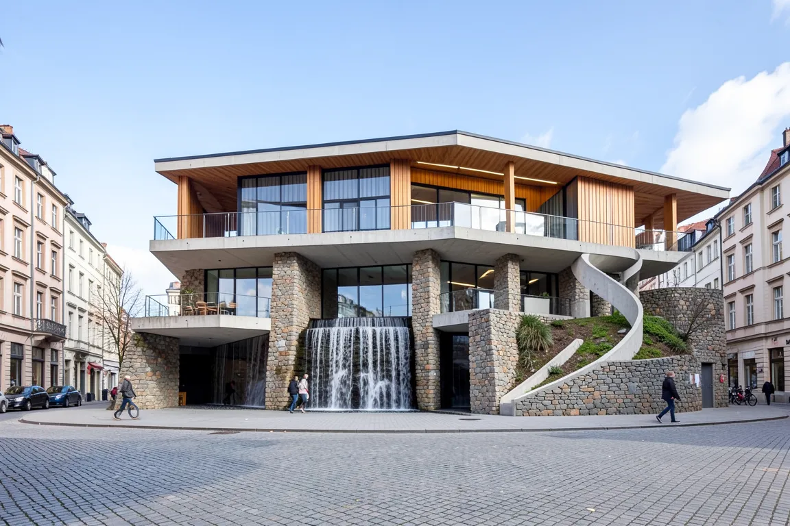

Здание растёт из своего участка, как растение. Райт, Аалто и Гофф соединяли план, конструкцию и материал в одно текучее целое, открытое земле, без жёсткого фасада и коробки.

Главная идея
Здание должно расти из своего участка и использования как живая форма: целое и части принадлежат друг другу, а план течёт вместе с землёй.
Принципы дизайна
Подгоняйте здание под участок: задавайте уровни пола по уклону и позволяйте камням, деревьям и воде оставаться на своих местах.
Планируйте как непрерывный поток с малым числом дверей и открывайте каждую комнату на 2 стороны ландшафта и больше.
Берите консоль, кривую и спираль, пролётами 3–6 м, чтобы конструкция и форма были одним целым.
Берите мало материалов, 3–4, оставленных в естественном состоянии, и ведите их изнутри наружу.
Сжимайте вход до 2,0–2,3 м, затем отпускайте его в пространство 3,5–5 м.
Проектируйте встроенную мебель, свет и сад как части одной формы.
Антипаттерны
Закрытая коробка на спланированном участке
Накладной исторический орнамент
Жёсткая ортогональная сетка, игнорирующая участок
Глянцевые синтетические поверхности и закрашенные материалы